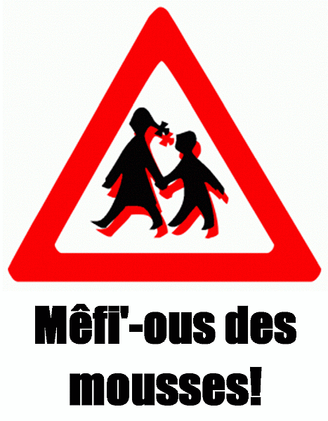

En Dgèrnésy,
Lé 1yi d'octobre, 1966
Moussieu l'Rédacteu,
"Tch'est qu'nou f'thait sans les mousses à nouos divèrti d'temps en temps?", un anmîn m'disait l'aut' jour.
"J'mé sis souvent d'mandé la mème chose quand j'ai veu des coupl'yes tchi n'ont pon d'êfants," j'lî dis. "Ch'est un drôle dé p'tit bouanhomme, qu'un garçon! Nou les vait partout - p'tits et grands - à grapinner, à grîmper, à lôvier ou à couorre. I' sont cadlinnés par grand-péthes et grand'méthes, et gâtés par lus méthes!
"Un p'tit garçon est heutheux auve sa fache et ses mains sales. D'l'ieau pour sé laver li fait mal au tchoeu, mais i' n'y a rein tch'il aime mus qué d'varvoter dans l'ieau sale! Quand ses bottes sont bliatchinnées i' prand san pliaîsi à marchi dans les mathes en s'n allant à l'êcole ou à l'églyise. Si y'a eune muthâlle lé long d'la route, il aime mus marchi sus l'haut d'la muthâlle qué dans la route! Il a l'appétit d'un j'va et la digestion d'eune machinne-à-battre, l'ênèrgie d'un tchian souotre un lapîn et la tchuthiôthité d'un cat, les poumons d'un faîtheux d'vendues et l'înmaginnation d'un Député d'la ville dans les Êtats. Dans des temps il est craintif comme un tchian fouôté, et tchiquefais, il est prêt à s'quétilyi pour un rein. I' plieuthe pour aver chein tch'i' veurt, et dans d'aut' temps i' plieuthe quand nou li donne chein tch'i' n'veurt pon!
"Quand nou l'forche à vouos aîdgi contre san gré, il est si gauchet qu'janmais i' n'fait bel êffet, et quand nou n'veurt pon êt' embêté d'li i' n'y a pon mouoyain d's'en dêfaithe! S'il est trantchil' nou sé d'mande s'il est malade, et quand i' fait trop d'brit nou lî fait des rouaux sus l'co! N'y a pon mouoyain dé l'faithe sé couochi d'bouanne heuthe au sé, ni dé l'faithe sé l'ver d'bouanne heuthe au matîn pour aller à l'êcole, mais quand i' n'y a pon d'êcole, il est l'vé auve les poules, et s'nou veurt dormi i' fait un tas d'tappage dans la maîson!
"Il aime la crème à la glace, l's ôtis qu'nou lî d'fend d'touchi, lé Jour dé Noué, les commiques dans la gâzette, lé mousse dé l'aut' côté d'la route, l's annimaux, san p'pèe et l'sanmedi matîn. I' n'aime pon fort l'Êcole du Dînmanche, les livres sans portraits d'dans, les léçons d'musique, ni l'copeux de gu'veux. Ouaithe tch'il est tréjous tard pour ses r'pas, i' veurt êt' lé preunmyi à sé l'ver d'la tabl'ye! I' peut mettre assez d'âtivelles dans ses pautes pour les dêfonser - des brioches, deux-s'trais cappeurs si ses gens peuvent affaurder d'lî en donner, eune êlîngue, des crayons, des chucrîns à la maintchi êgliamis, un topîn, des marbres, un ouaîsé tch'il a trouvé mort dans la route - pour lé donner au cat - trais ou quat' vèrges dé ficelle et Bouan Dgieu sait tchi d'aut' hâsi, et i' trouve acouo assez d'run pour y fouôrrer ses pattes si l'temps est fraid. Nou pouorrait mème dithe qu'un garçon est comme lé gabet à Gabeldu - i' mèrque Nord quand l'vent est Sud - mais, Danme, nou l'manqu'thait s'i' n'tait pon là quand nou r'veint du travas au sé! Il est l'esprit tchi dominne nouos affections, tchi vouos attendris l'tchoeu, et vouos adouochit l'caractèthe!"
"Ch'est bein vrai, quand nou-s y pense," mén anmîn m'dit, "Et dans des temps i' vouos f'thaient pendre! I' pathaît qué l'mousse à Nicolas L'Hadgais mînt san péthe en mauvais draps auve sa bouannefemme l'aut' jour. Il est un mio sauvage, chu mousse-là. Il 'tait auve sa méthe à visiter d's anmîns tch'ont des sou et tchi gardent eune sèrvante - eune belle hardelle, à ch'tchi pathaît. I' s'adonnait qu'oulle 'tait à êpousseter dans l'parleux quand il' arrivîdrent. Oulle aime les mousses, et quand ou' dît à Missis Lé Hadgais qué san mousse 'tait un bieau p'tit garçon, la méthe - ordgilyeuse dé l'ouï loûser - dît au mousse d'embraichi la belle janne fille. Lé mousse èrfûsit d'êt' embraichi. 'Allons, man p'tit,' sa m'mèe lî dît, 'Embraiche la belle danme, don - i' n'faut pon êt' sauvage dé mème!' 'Mais, m'mèe,' s'fît l'mousse, 'J'en ai peux, mé, d'chutte belle danme-là! Si j'l'embraiche, ou pouorrait m'baillit eune tournéoualippe comme ou baillit à p'pèe l'aut' sé!' I' pathaît qué l'pouorre Nicolas n'a pon ieu dé r'pos siez li d'pis, et tch'il a fallu donner eune neuve robe et un neu chapé à sa bouannefemme pour la faithe rester auve li, viyant qu'oulle a m'nichi dé l'tchitter et d's'en r'aller d'meuther auve sa m'mèe!"
"Lé mein n'ma pon 'couo mîns en embarras," j'dis à nouot' anmîn. "Mais il a l'filet bein copé, man bouanhomme! I' mé d'mandit l'aut' jour pour un ch'lîn pour dêpenser au thée des trais pâraisses. 'Ch'est hardi d'sou à dêpenser pour un mousse dé t'n âge," j'lî dis, 'Mais j'm'en vais t'en donner iun viyant qu'tu n'as pon mantchi à l'Êcole du Dînmanche. 'Il est temps qu't'apprange, dgia, qué nou n'trouve pon les sou pitchis sus les ronches. Ch'est auve un tas d'peine qué nou les gangnent, et j'veurs qué tu faiches chu ch'lîn-là aller aussi liain qu'possibl'ye!' 'Oui dgia, p'pèe!', i' m'dît. 'J'lé f'thait aller si liain qu'tu n'lé r'vèrras janmais!'"
George d'La Forge
Viyiz étout: